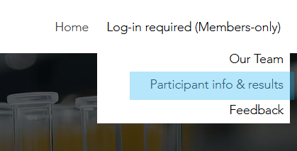
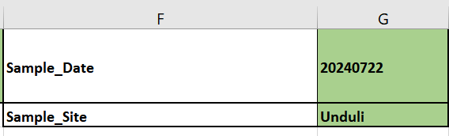
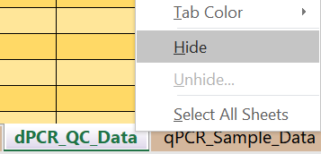
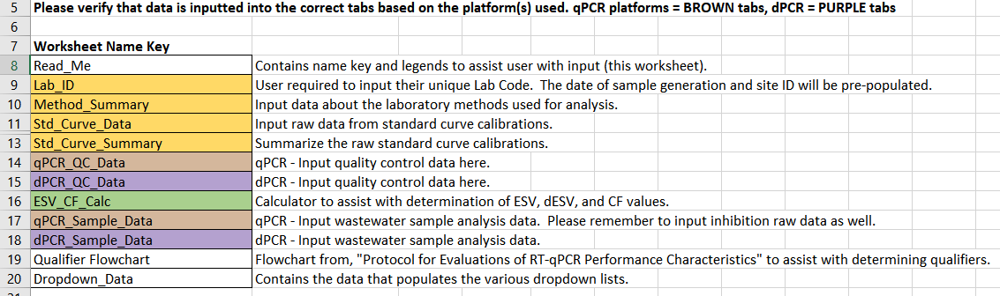
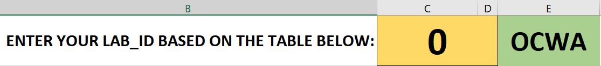
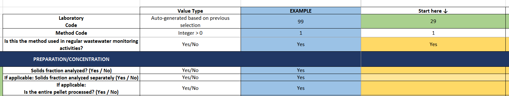
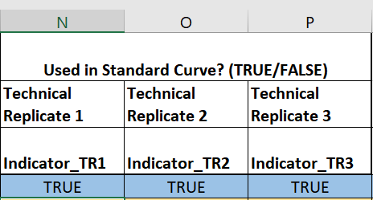
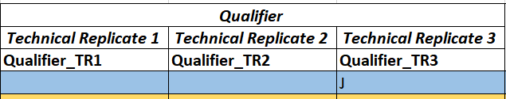

1 Introduction
1.1 Objective and Scope
Objective: Provide a walk-through of the Labstats.ca reporting template (Excel xlsx file format)
Scope: Applicable to all laboratories participating in a Labstats.ca Proficiency Test
Signup information and program details are available at Labstats.ca
1.2 Accessing the Reporting Template
- After login on Labstats.ca, the reporting template is available for download in the ‘Shared’ folder of ‘Participant info & results’

1.3 Version Control
- Each sample round will use a dedicated version of the Reporting Template
- Template version is specified on Row 3 of the Read_Me worksheet:

1.4 Filename
The downloaded reporting template will have a file name in this format:
- LabID-20240422_Data_Reporting_LabName_raw.xlsx
Open the reporting template, change to the Lab_ID worksheet
- Find the Lab_ID number that corresponds with your lab. Send us an e-mail ( LabStats@ocwa.com ) if you cannot locate your lab
Close the reporting template
Edit the file name in Windows to replace the ‘LabID’ with your Lab_ID number from above and change the ‘Labname’ to an abbreviation for your lab name
- E.g. 99-20240422_Data_Reporting_OCWA_raw.xlsx
1.5 Structure of Reporting Template
Open the reporting template .xlsx file that you just renamed
The template is structured with a general intent to complete worksheets sequentially
Both qPCR and dPCR specific worksheets are present by default, it is suggested to hide worksheets of a platform you are not submitting results for simplicity
- For example, to hide the dPCR_QC_Data worksheet, right-click and select ‘Hide’

2 Worksheets
2.1 Read_Me
- Read_Me is the first worksheet and provides a name key and colour reference

2.2 Lab_ID
Fill out your Lab_ID in cell C1 (same as used for the filename)
- Verify that the lab name in cell E1 is correct

2.3 Method_Summary
- This worksheet is where the details of your methods are filled out starting with Method 1 in cell F9

Tip: Do not use a different method code if the pre-analytical steps (i.e., concentration/extraction steps) are the same. For example, if two targets (PMMoV and SARS-CoV-2) are characterized from the SAME RNA extract, the method is regarded as the same and should be described in the same method column entry.
Indicate the platform used for quantification in row 33 for each method (qPCR/dPCR/both)
2.4 Std_Curve_Data (qPCR only)
For methods using qPCR, this sheet is where the dilution series data from your standard curve(s) are populated
Columns N through P are used to indicate if each dilution series point is used in your standard curve or not. In other words have any of the points chosen to be discarded keeping in mind the requirements from the Ontario protocol (Section 3)

2.5 Std_Curve_Summary (qPCR only)
For methods using qPCR, this sheet is where parameters of the standard curves are reported
- Paired with the dilution series data reported on Std_Curve_Data
If a long term standard curve is used to quantify results, please indicate in the column ‘Long-term_curve’
2.6 ESV_CF_Calc
Effective sample volume (ESV) and concentration factor (CF) calculator
This calculator is optional but highly recommended to ensure that the ESV and CF are calculated correctly
- ESV is essential so that the reported concentration estimates are representative of the amount of the original wastewater sample that was actually analyzed
2.7 qPCR_QC_Data
For methods using qPCR, this sheet is where quality control results are to be reported
See Section 2.11 for details on completing the ‘Qualifier’ columns:

2.8 dPCR_QC_Data
- For methods using dPCR, this sheet is where quality control results are to be reported
2.9 qPCR_Sample_Data
- For methods using qPCR, this sheet is where sample results and inhibition control data are to be reported
2.10 dPCR_Sample_Data
- For methods using dPCR, this sheet is where sample results and inhibition control data are to be reported
2.11 Qualifier_Flowchart
Flowchart to assist with completing the technical replicate qualifier columns in the qPCR_QC_Data and qPCR_Sample_Data worksheets
- Source with additional details is the Ontario reference document, Protocol for Evaluations of RT-qPCR Performance Characteristics